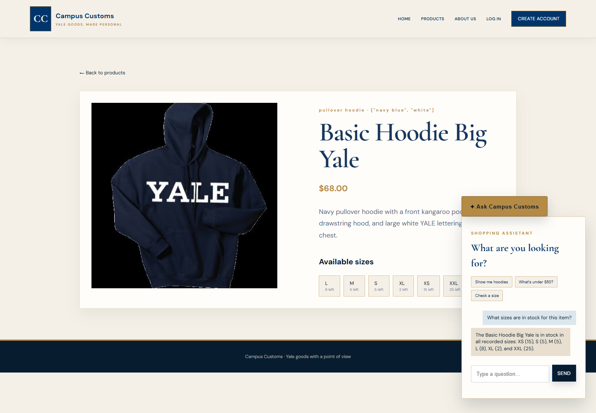
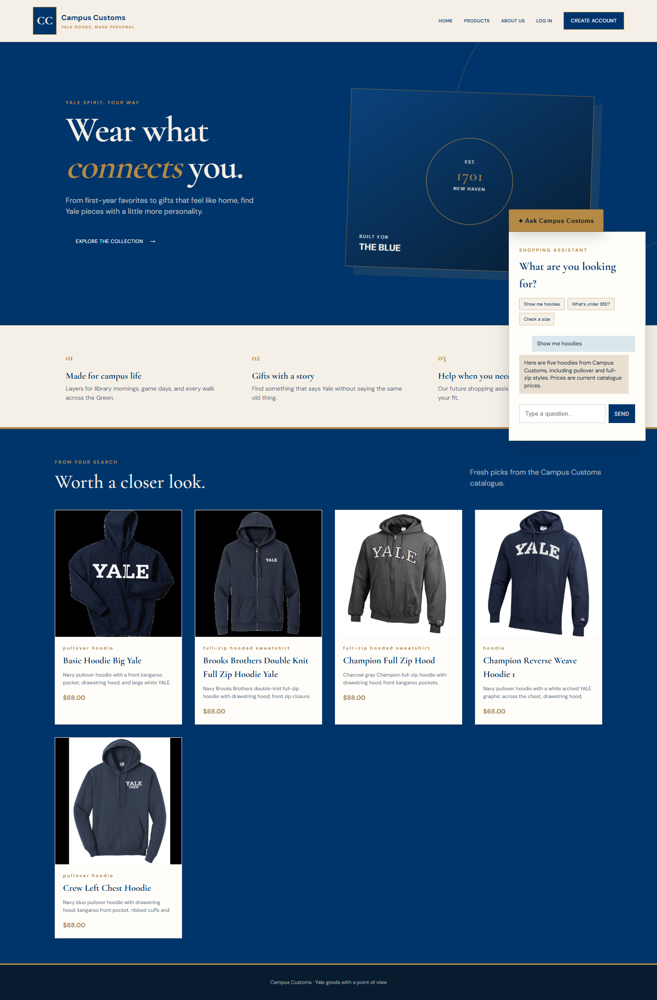
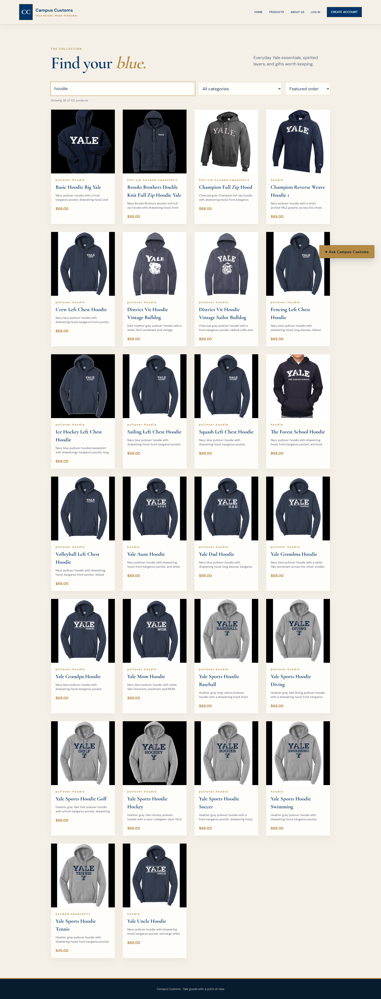

Captured from the running Vite frontend at localhost:5173 with the FastAPI service and database-backed agent running at port 8000. The images below are direct screenshots from those browser sessions, not mockups.
The chat asks for inventory on the product page for Basic Hoodie Big Yale. The response reports the database-backed price of $68 and the recorded quantities by size, demonstrating that the assistant is using live catalogue and inventory data.

The quick prompt sends “Show me hoodies” to the agent. The returned structured product matches appear in the “Worth a closer look” section with real images, names, prices, and descriptions.

Typing “hoodie” into the Products search control immediately narrows the catalogue to 26 matching items while preserving the filter and sort controls. This verifies the Problem 9 browse improvement in the running storefront.
